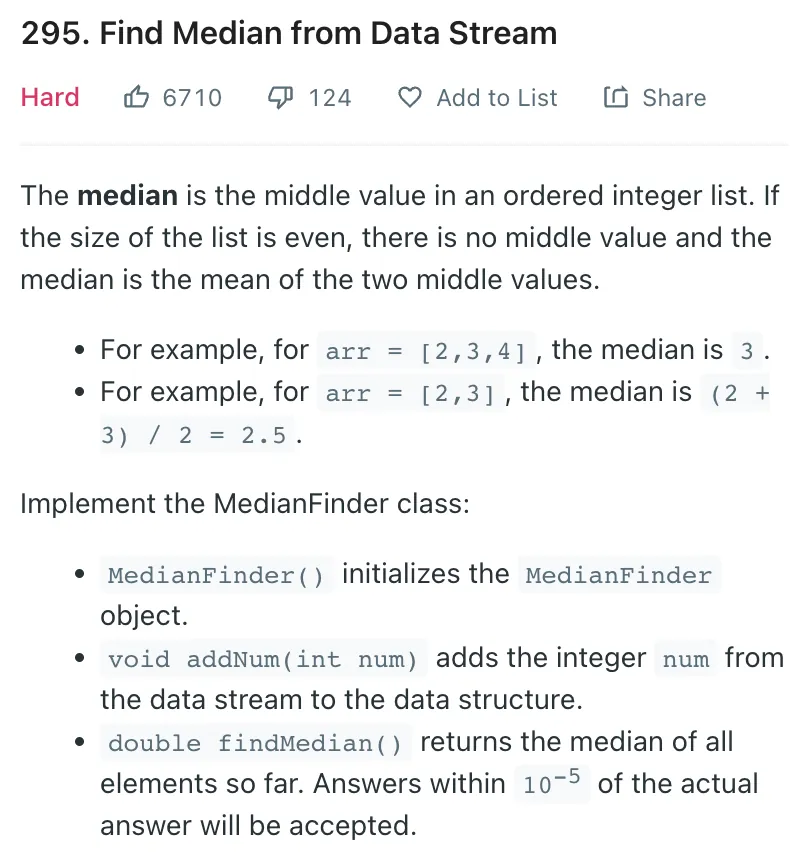
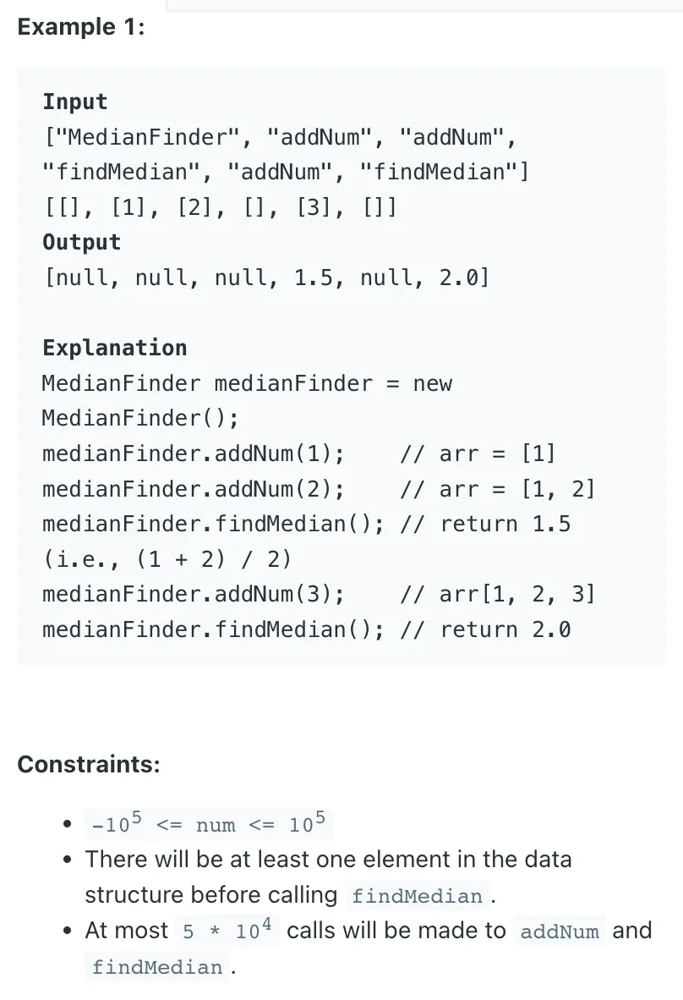
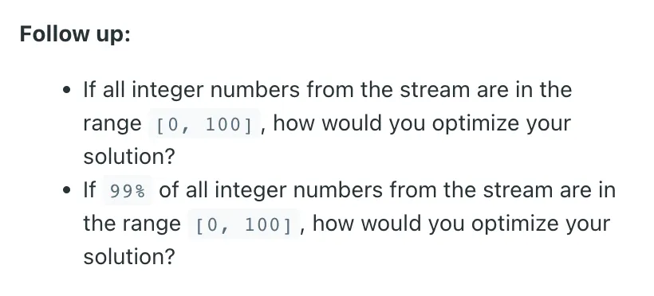

295. Find Median from Data Stream
Question



✍🏽 My Solution
Runtime: 111 ms, faster than 90.73% of Java online submissions for Find Median from Data Stream. Memory Usage: 71.4 MB, less than 79.56% of Java online submissions for Find Median from Data Stream.
class MedianFinder {
private PriorityQueue<Integer> minQueue = new PriorityQueue<>((o1, o2) -> o1 - o2);
private PriorityQueue<Integer> maxQueue = new PriorityQueue<>((o1, o2) -> o2 - o1);
public MedianFinder() {
}
public void addNum(int num) {
if (maxQueue.isEmpty() || num < maxQueue.peek()) {
maxQueue.offer(num);
} else {
minQueue.offer(num);
}
// 如果n是奇數，大頂堆要維持有n/2+1的數據，小頂堆有n/2個數據
while (maxQueue.size() < minQueue.size()) {
Integer e = minQueue.poll();
maxQueue.offer(e);
}
// 如果小頂堆元素 比 大頂堆元素少2，把大頂堆的元素加到小頂堆
while (minQueue.size() < maxQueue.size() - 1) {
Integer e = maxQueue.poll();
minQueue.offer(e);
}
}
public double findMedian() {
if (maxQueue.size() > minQueue.size()) {
return maxQueue.peek();
} else {
return (maxQueue.peek() + minQueue.peek())/2f;
}
}
}
🧠 Thought Process
- Why did I choose this particular implementation?
- 幾乎是照抄王爭的思路
- 使用兩個優先隊列、大頂堆跟小頂堆來維護中位數
- 當數據流元素數量為偶數，代表兩個堆的元素相同，取兩個頂堆的元素相加除以2
- 當數據流元素數量為奇數，大頂多比小頂堆個數多1，直接取大頂堆堆頂元素
- What mistakes did I make?
- 分不清poll跟pull
Solution #1 [王爭-優先隊列]
Runtime: 111 ms, faster than 90.73% of Java online submissions for Find Median from Data Stream. Memory Usage: 71.4 MB, less than 79.56% of Java online submissions for Find Median from Data Stream.
class MedianFinder {
private PriorityQueue<Integer> minQueue = new PriorityQueue<>((o1, o2) -> o1 - o2);
private PriorityQueue<Integer> maxQueue = new PriorityQueue<>((o1, o2) -> o2 - o1);
public MedianFinder() {
}
public void addNum(int num) {
if (maxQueue.isEmpty() || num <= maxQueue.peek()) {
maxQueue.add(num);
} else {
minQueue.add(num);
}
while (maxQueue.size() < minQueue.size()) {
Integer e = minQueue.poll();
maxQueue.add(e);
}
while (minQueue.size() < maxQueue.size()-1) {
Integer e = maxQueue.poll();
minQueue.add(e);
}
}
public double findMedian() {
if (maxQueue.size() > minQueue.size()) { // 奇數（因為大小不同）
return maxQueue.peek();
} else { // 偶數就取這兩個堆的堆頂除以2
return (maxQueue.peek() + minQueue.peek())/2f;
}
}
}
/**
* Your MedianFinder object will be instantiated and called as such:
* MedianFinder obj = new MedianFinder();
* obj.addNum(num);
* double param_2 = obj.findMedian();
*/
Explanation (in my words)
-
How does their solution work?
-
要一直維護具有以下特性的兩個堆：
- 一個大頂堆，一個小頂堆
-
每個堆中元素個數接近n/2（因為n有可能是偶數或奇數）：
如果n是偶數，兩個堆中的數據個數都是n/2；
如果n是奇數，大頂堆有n/2+1的數據，小頂堆有n/2個數據；（好處是大頂堆堆頂元素永遠是中位數）
-
維護大頂堆中的元素都小於等於小頂堆中的元素。
那麼，大頂堆中堆頂的元素就是中位數。O(1)
在插入數據時，如何維護兩個堆繼續滿足上述特性呢？ 插入time為O(logn)
如果新數據小於等於大頂堆的堆頂元素，就將這個新數據插入大頂堆，否則，插入到小頂堆。
不過此時就有可能出現兩個堆中的數據個數不符合前面約定（第二點）。⇒ 我們通過從一個堆中不停地將堆頂元素移動到另一個堆，通過這樣的調整，讓兩個堆中的數據個數滿足前面的約定。
-
-
What is the space/time complexity of their solution?
- time
- addNum: O(logn)，其中 n 为累计添加的数的数量。
- findMedian: O(1)。
- space: O(n) 優先隊列的開銷
- time